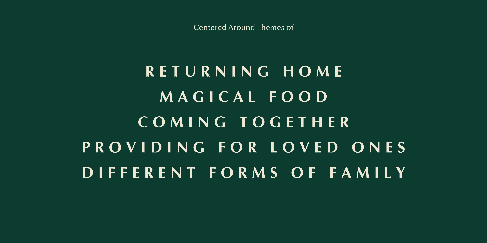
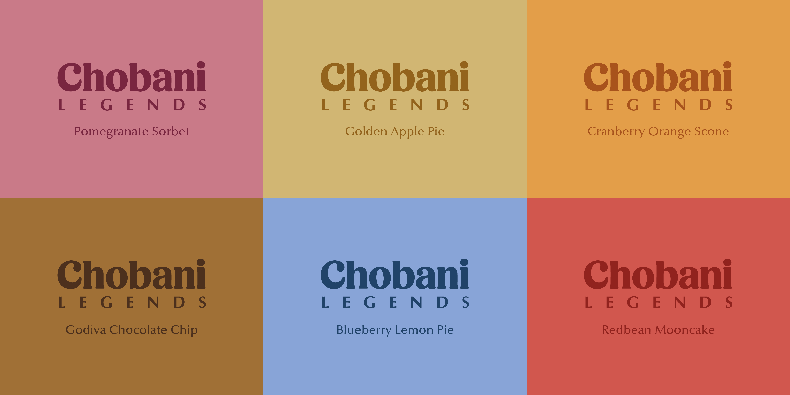
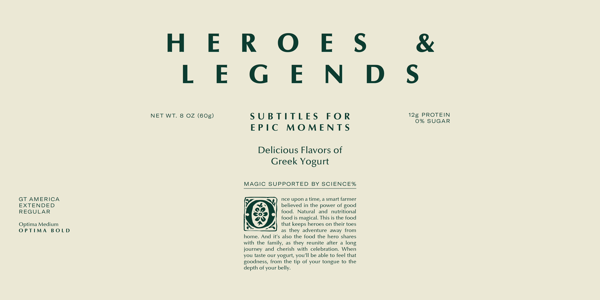
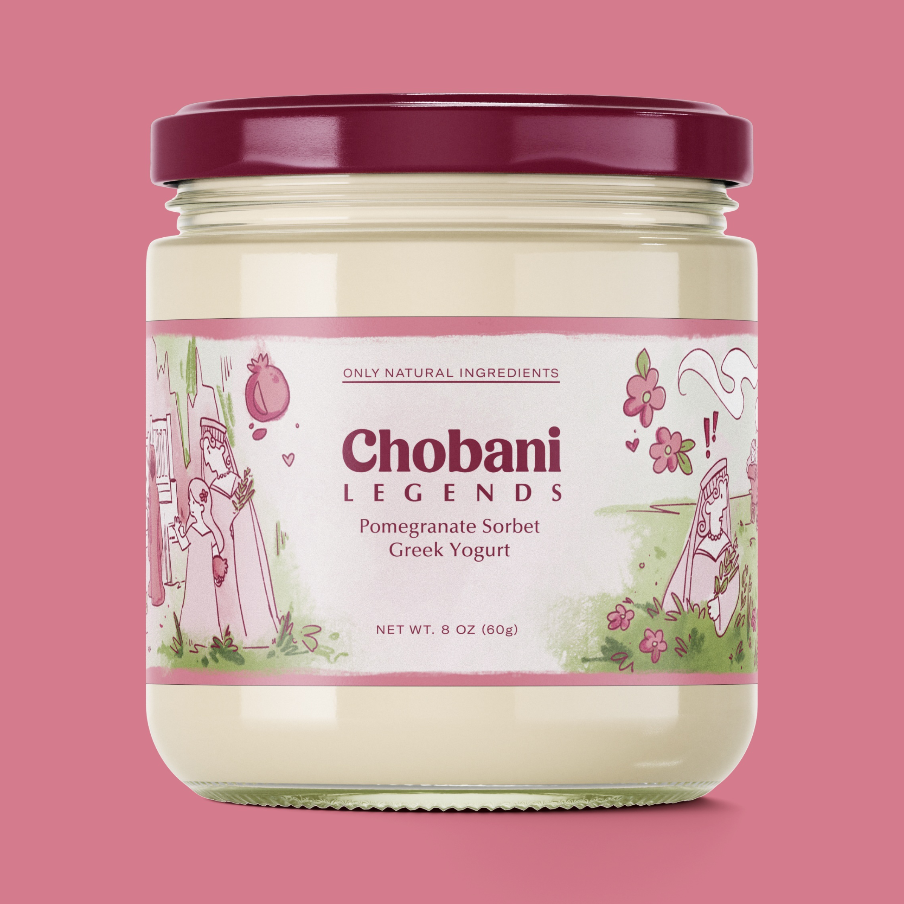
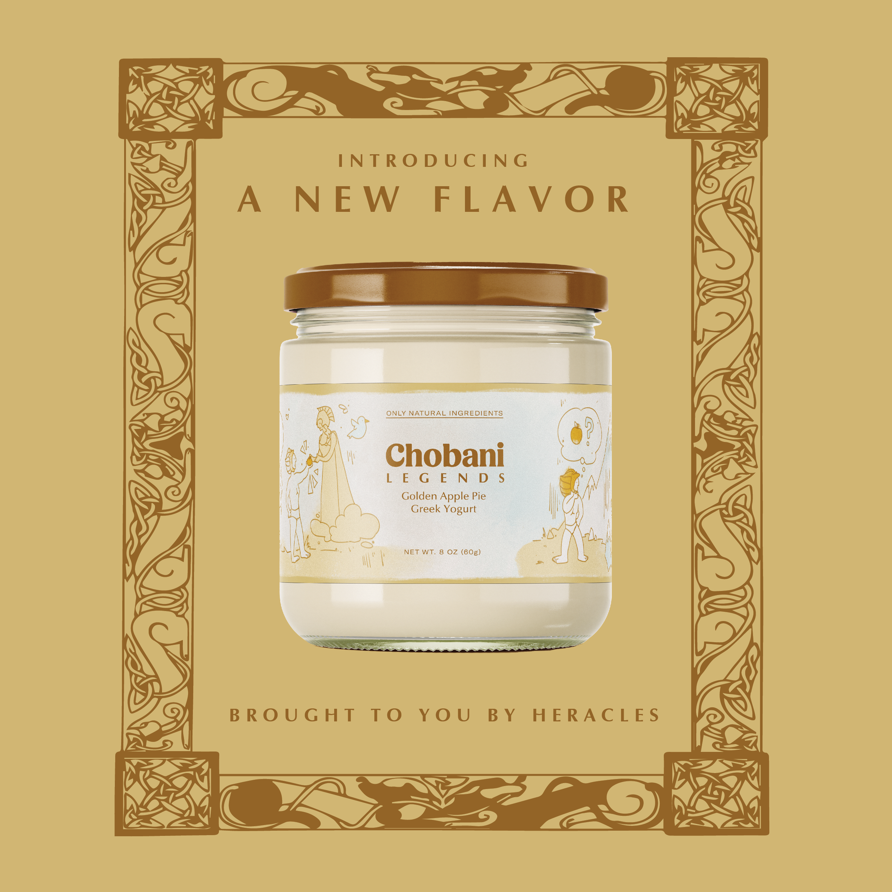

CHOBANI LEGENDS
storytelling with the power of good food
brand identity | illustration | package design
client Chobani (case study)
guided by Elizabeth Goodspeed and Kim Duck
Chobani has a mission of making natural, nutritious and delicious food. With Chobani Legends, a series of greek yogurts inspired by nostalgic dessert flavors and crafted for those seeking a more elevated yogurt experience, the Chobani family is expanded to cater for those decadent moments. The look for Chobani Legends is centered around myths and legends, each flavor inspired by a story that tells the tale of fighting for a happily ever after.




Inspired by the art and stories told on the frescoes of Greek walls, each yogurt cup in the Chobani Legends line is wrapped with an illustration that tells the story of a traditional myth or tale. These stories are selected for their common themes shared with the Chobani design principals: compassion, courage, creativity, and magic.




Created for RISD Design Studio IV.